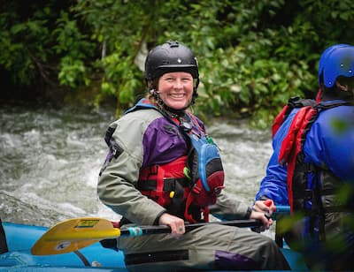
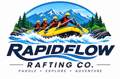
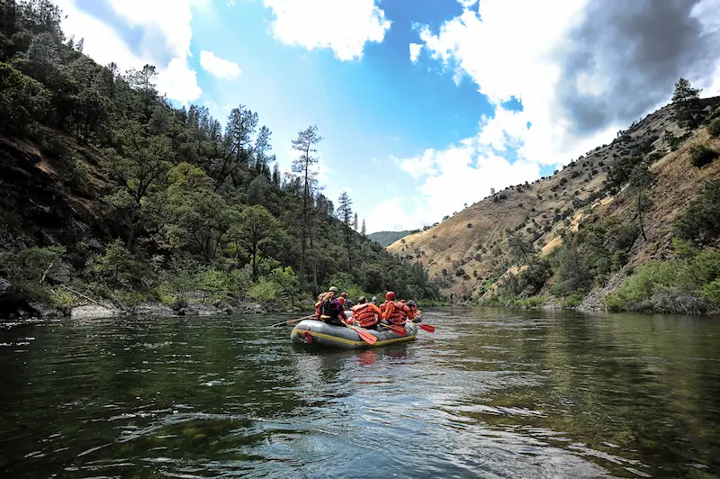

To create thrilling, safe, and memorable whitewater rafting experiences that bring people closer to nature, challenge personal limits, and inspire a spirit of adventure. Paddle. Explore. Adventure.



To create thrilling, safe, and memorable whitewater rafting experiences that bring people closer to nature, challenge personal limits, and inspire a spirit of adventure. Paddle. Explore. Adventure.
RapidFlow Rafting Co. was founded out of a passion for adventure, exploration, and the great outdoors. The company was established with a vision of bringing people closer to nature through exciting and unforgettable whitewater rafting experiences. What began as a simple dream to share the thrill of river adventures grew into a commitment to providing safe, enjoyable, and professionally guided rafting experiences for individuals, families, and groups. Driven by a love for adventure and respect for the natural environment, RapidFlow was built on the principles of safety, teamwork, customer satisfaction, and environmental responsibility. Today, RapidFlow Rafting Co. stands for more than just rafting. It represents courage, friendship, discovery, and the determination to embrace life's adventures. Our journey continues with every paddle, every rapid, and every adventurer who joins our crew.